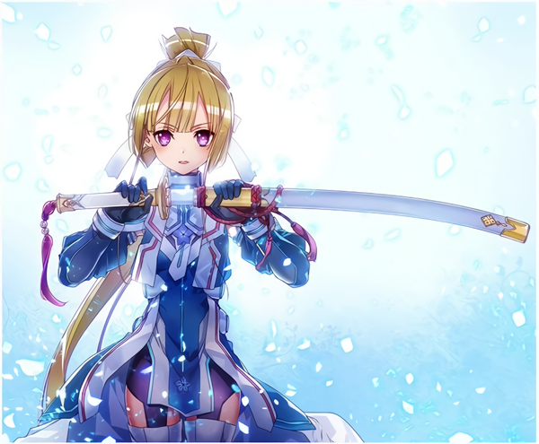

そのバトンの名は、『勇気』である。別名を、『希望』と言う。『願い』とも言う。
『乃木若葉は勇者である』の主人公。超がつくほど真面目な性格で、恩義や情けには報いを。 攻撃されたら報復を旨とする。凛々しい外見でファンも多いが、単純ゆえ嘘にすぐ引っかかる など天然さが垣間見えることも。
巫女の一人。若葉の幼馴染で大の親友。面倒見の良い性格で、良く若葉の世話をしている。 若葉の耳掃除が得意。本当に同じ歳か、などと良く言われる。
明るく元気いっぱいでチームのムードメーカー。 他人の気持ちに敏感で、周囲に気を遣う子。自分が選ばれた事を誇りに思い終末戦争に身を投じる 。私生活などにおいては謎も多い。
過去、内気な性格に目をつけられていじめられ、友達もいなかったが、 勇者に選ばれてからは周囲の目が一変。彼女の心境に変化が起こる。 明るい高嶋友奈の人柄に惹かれて彼女には心を開いている。
わんぱくで、落ち着きがない少女。敵に突撃しては周囲をハラハラさせている。 後輩の伊予島杏とは出会ってから意気投合し、姉妹のように仲が良く彼女は自分が守ると強く思っている。
本が手放せない程、読書が大好き。特に恋愛モノが好物で、 よく恋愛小説を読んでは涙する泣き虫なところも。フィジカル的にも、勇者の中では明らかに弱いが何かと役に立とうと頑張っている。